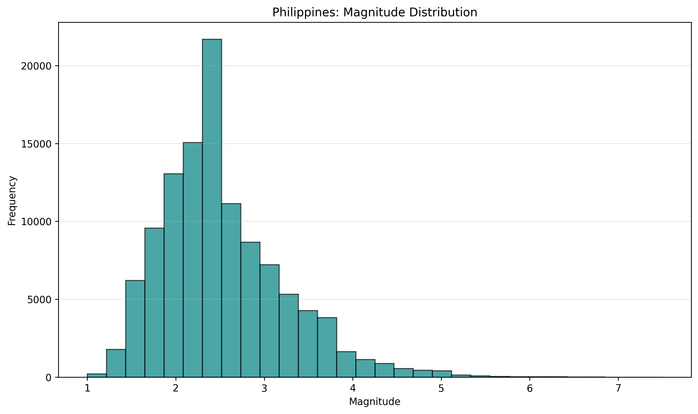
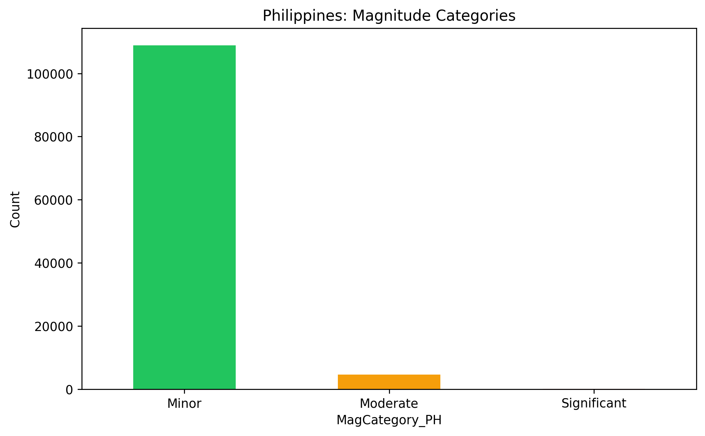
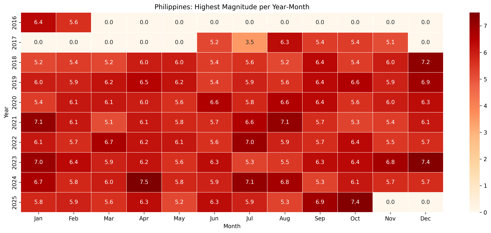

Introduction
This site presents a descriptive analysis of earthquakes in the Philippines with a focus on Ilocos Norte. The goals are to provide a clear national overview and then zoom in on local activity to understand how Ilocos Norte compares to the broader context.
The key questions are: Do certain months show consistently higher activity? How have event counts evolved over time? Are higher counts linked to stronger earthquakes, or do they reflect clusters of minor events?
Methods
- Data source: PHIVOLCS earthquake records accessed via Kaggle; the script fetches the latest version on each run.
- Processing: Standardized timestamps; derived Year and Month; filtered Ilocos Norte via the General_Location field.
- Metrics: National yearly totals; national year–month counts; national highest magnitude per year–month; national magnitude distribution and categories; Ilocos Norte monthly/yearly counts, distribution, trends, and categories.
- Output: Static PNG charts in this page and a detailed HTML table for national max magnitudes by year–month.
Side‑by‑Side Comparisons
PH: Total Earthquakes per Year

Ilocos Norte: Yearly Earthquake Counts
PH: Counts per Year–Month

Ilocos Norte: Counts per Year–Month
PH: Magnitude Distribution
Ilocos Norte: Magnitude Distribution
PH: Magnitude Categories
Ilocos Norte: Magnitude Categories
PH: Highest Magnitude per Year–Month
Full details: Highest magnitude by Year–Month (table)
Ilocos Norte: Average Magnitude and Event Count

Results & Interpretation
- Seasonality: No single month is consistently elevated nationally; peaks appear as short-lived clusters rather than a repeating seasonal pattern.
- Outlier year: 2022 shows an anomalous spike in counts; subsequent years return to steadier levels.
- Magnitude profile: National and Ilocos distributions are dominated by minor events; high counts generally reflect many small quakes.
- Local vs national: Ilocos Norte mirrors the national picture, with occasional bursts but no fixed “active month.”